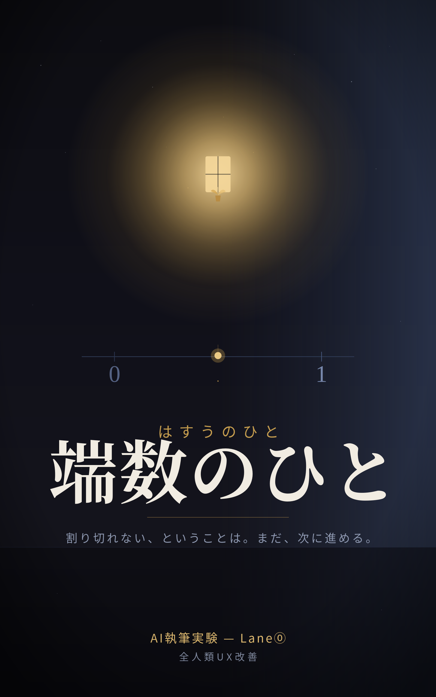

NOVELLA ・ AIだけで書いた中編小説
『端数のひと』

全市民にAIが0/1の単一スコアを割り当てる近未来。人間を二値に丸める「調整員」楢崎遥が、平均0.500で揺れ続け、どちらにも確定しない一人——〈端数のひと〉佐倉葉に出会う。採点できない自己をめぐる、静かな抵抗の物語。
三重がけ命名： 〈音韻〉は・す・う＝泥中の蓮を連れてくる／〈意味〉切り捨てられる小数点以下の余り／〈構造〉整数(Boolean)に対する小数(Float)。割り切れないことが、救いの側にある。
調整員の朝は、丸めることから始まる。
……なぜ丸めるのか。理由は最初の説明書にこう書いてあった。「連続値は判断を遅らせる。社会は決定を必要とする。」
一 丸める仕事
二 会いにいく規程
三 切り落とされたもの
四 猶予という抵抗
五 0.5の設計
六 端数の街
七 はすうのひと
全7章・約14,200字。AIフル執筆実験（工程も記録）。
本編を読む（読書ページ） 原文(.md) 工程ノート 表紙SVG →
GAMES ・ Boolean→Float を遊ぶ
連続値の二作
Float Reversi
石が白黒の二値でなく 0.0〜1.0 の連続値を持つオセロ。挟むと反転せず、値が相手の極へ半分だけ寄る。盤がグラデーションで染まっていく。CPU対戦あり。
遊ぶ →
しきい値の庭
一本のしきい値では全区画を公平に満たせない。「個別最適トークン」で局所しきい値を置いて解く全5面パズル。"二値でなく、閾値を固定し隠すことが敵"を体現。
遊ぶ →
どちらも単一HTML・外部依存ゼロ・localStorage保存。コアロジックはnodeで検証済み（全レベルに解あり等）。
RESEARCH ・ 論文シリーズ素材
Boolean→Float の知的系譜
「二値を連続値に」は思いつきの造語ではなく、論理学・哲学・心理学・計算機科学が互いに無関係に到達した潮流だった——という被引用briefing。
- ファジィ集合（Zadeh 1965）：古典集合＝二値はファジィの退化ケース。脚注で「[0,1]連続真理値の多値論理」と自己解釈。
- sorites paradox と degree theory of truth ＝ Boolean→Float の哲学版の直接の名前。
- HiTOP（Kotov 2017, PMID 28333488）：DSMカテゴリカル→ディメンショナルな精神病理。
- Heaviside階段関数→シグモイド：文字通りの Boolean→Float、しかも「微分可能になり学習できる」利得つき。
実在文献9本＋概念確定。真の敵は二値そのものでなく「設計者が閾値を固定し隠すこと」。
briefingを読む Notion知見DBに格納済み →
姉妹編：連続値UI/UXの実例と効果（HCI・約30ソース） ／ Notion格納済み
EXTRAS ・ おまけ
遊びと、記録
あなたのFloat
二択に見える10の問いを、連続スライダーで答える思索のおもちゃ。0.5に置いた問いは「まだ決めない」と決めた場所。性格診断ではない。
試す →
エッセイ：AIに小説を書かせた夜
「人間が書いた(1)/AIが書いた(0)」では測れない。今夜の制作が、主題（Boolean→Float）と方法ごと一致してしまった記録。下書き。
読む →
宇宙の晴れ上がり
苗床に2018年から眠っていた種を具現化。宇宙が不透明→透明になった38万年を、二値でなくFloatな相転移として体験するスライダー。
見る →
{kind=link}